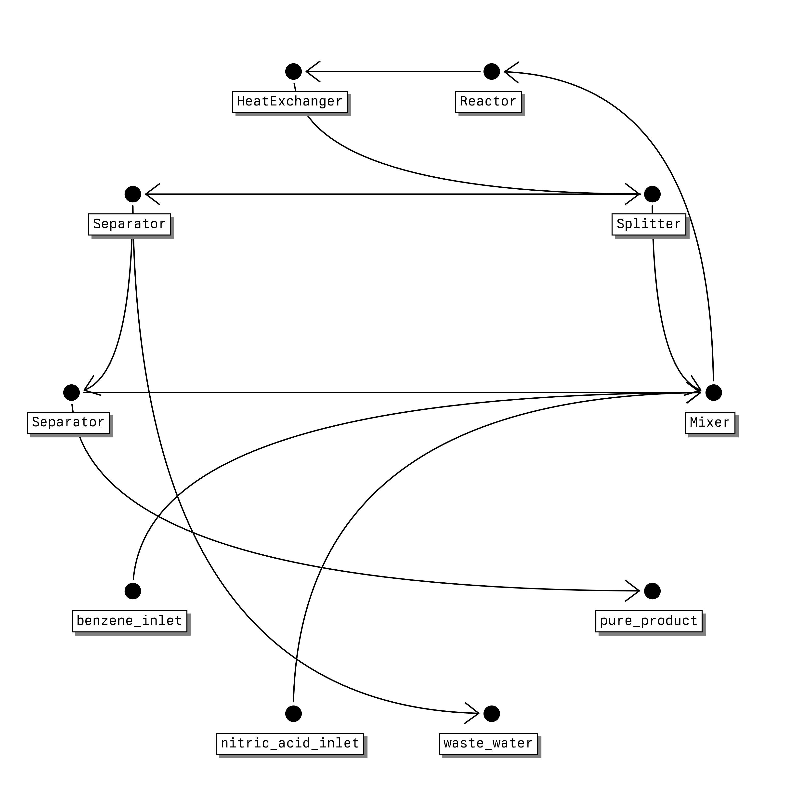
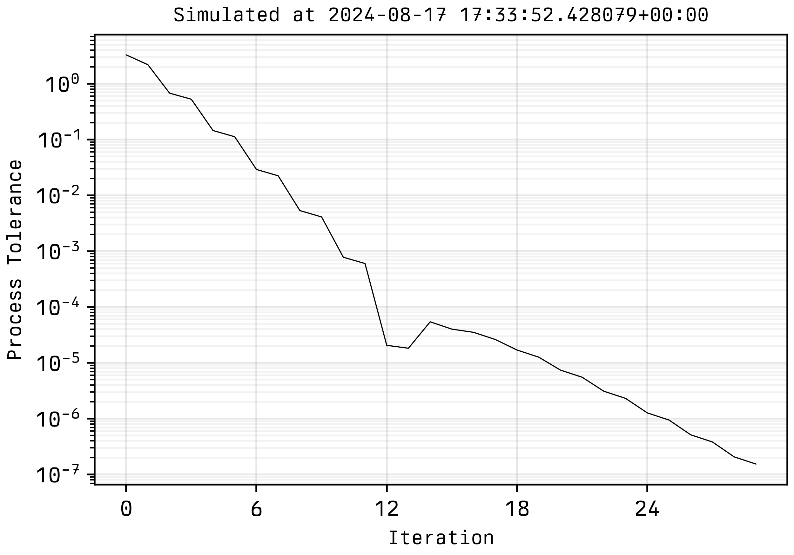
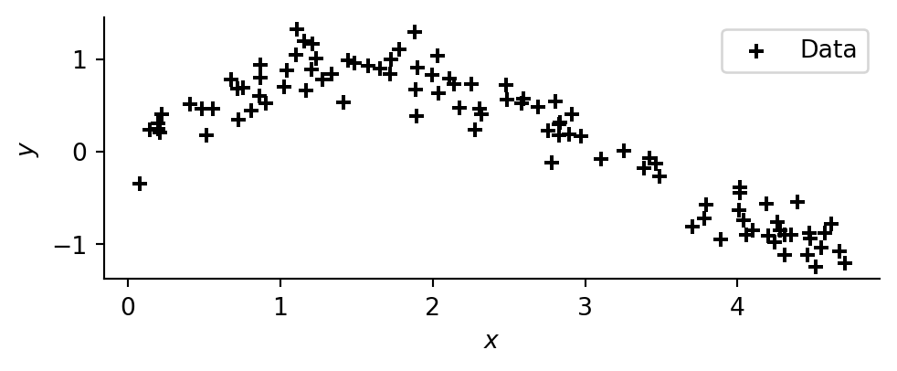
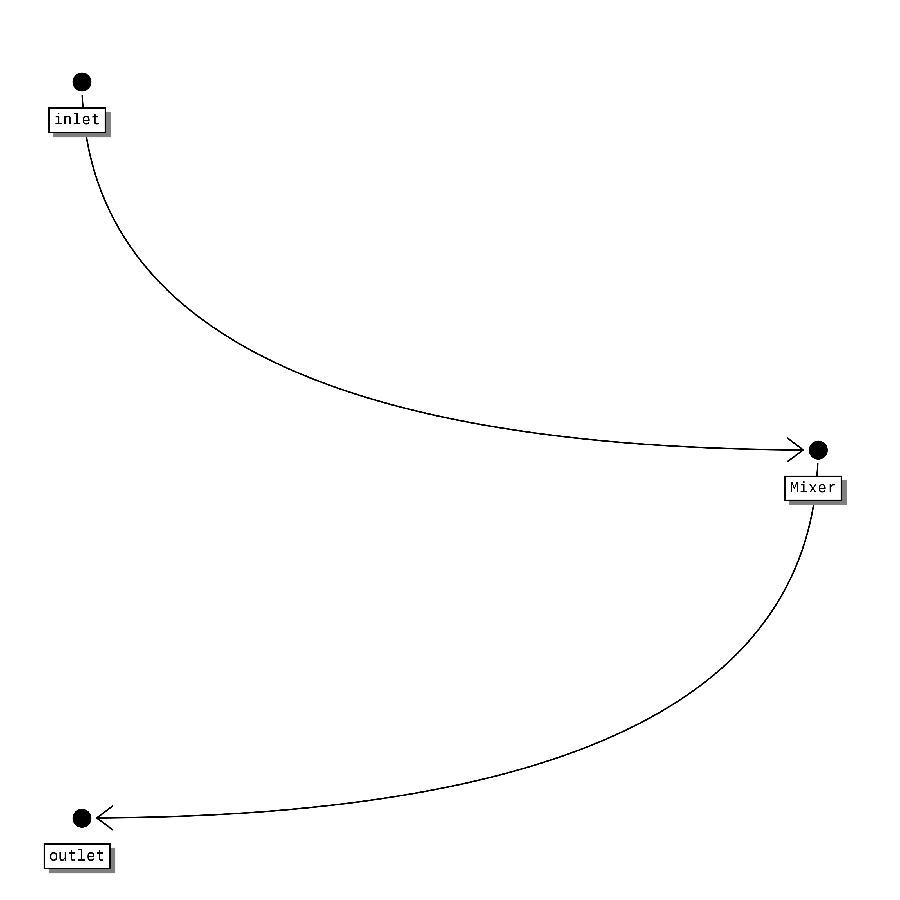
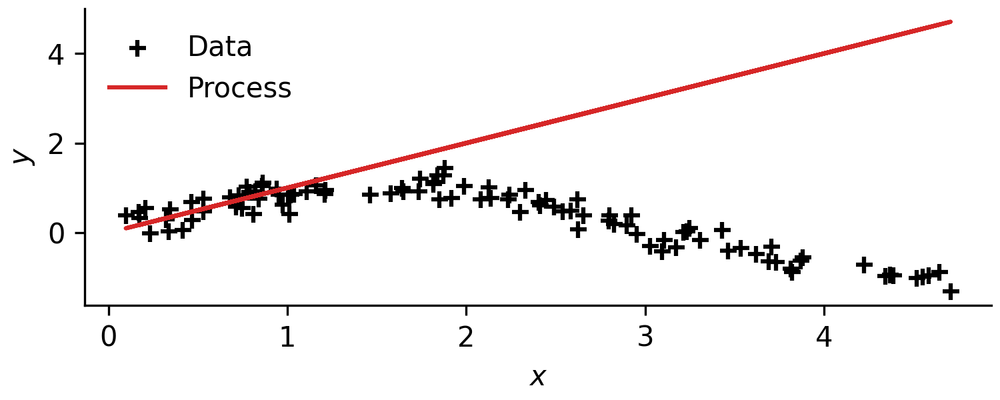
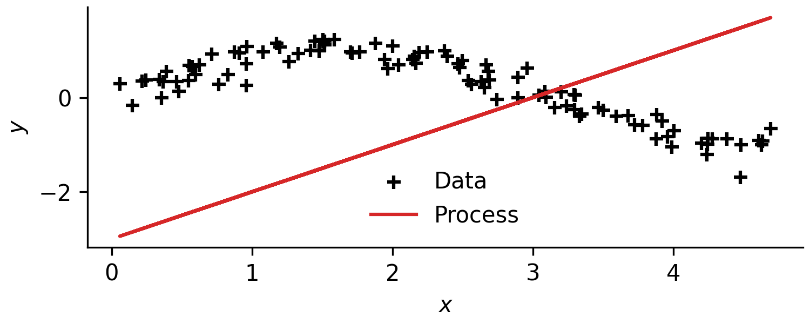

process_file = "nitrobenzene_process.toml"
process = parse_process(process_file)
process.plot("outputs/process.png")The Chinese room thought experiment provides an argument for why computers will never be able to truly ‘think’ (Moural 2003). In effect it states that a machine can be seen to be providing intelligent dialogue or conversation in Chinese, but inside ‘the room’ there is simply someone with a rule book that is large enough to enumerate all the potential answers, and the rules to generate and combine them (in effect, the structure of Chinese). This person doesn’t truly know or think about what they are doing. Whether or not this is a realistic analogy is not something I am going to attempt to answer. To me, the Chinese room, with it’s counter and counter-counter-arguments (Boden 1990), is relatively convincing.1
Moural, Josef. 2003. “The Chinese Room Argument.” In John Searle, edited by BarryEditor Smith, 214–60. Contemporary Philosophy in Focus. Cambridge University Press.
Boden, Margaret A. 1990. The Philosophy of Artificial Intelligence. Oxford University Press, Inc.
1 I also like the implication that if the Chinese room is correct, then either the human brain with it’s electrical and chemical signals is somewhat ‘special’ and has some additional latent features that invoke conciousness/intuition/thought, or conciousness/intuition is actually just a bit of an illusion and there’s nothing to distinguish us from a bloke idly following instructions without understanding what they mean. Both equally fun.
But for the purposes of this post, I’m not convinced, I think it’s all wrong.
Here’s a quote that I enjoy from the Stanford Encyclopedia of Philosophy with an interesting extension to the thought experiment.
[…] He [Searle] suggests a variation on the brain simulator scenario: suppose that in the room the man has a huge set of valves and water pipes, in the same arrangement as the neurons in a native Chinese speaker’s brain. The program now tells the man which valves to open in response to input. Searle claims that it is obvious that there would be no understanding of Chinese. (Note however that the basis for this claim is no longer simply that Searle himself wouldn’t understand Chinese – it seems clear that now he is just facilitating the causal operation of the system and so we rely on our Leibnizian intuition that water-works don’t understand (see also Maudlin 1989).) Searle concludes that a simulation of brain activity is not the real thing.
It’s a good point, water-works can’t think, can they? If a brain can think, and a brain can be modelled like a series of pipes, then why can’t a series of pipes think? If I were to replace a single pipe with an actual real neuron, the signal of which controlled a valve to the next pipe, then would my water-works2 be able to think? If I just start replacing all the pipes in my works with equivalent neurons, at what point does conciousness kick in? (Maudlin 1989)
2 spoiler alert, or… chemical processes.
Maudlin, Tim. 1989. “Computation and Consciousness.” The Journal of Philosophy 86 (8): 407–32.
Schwitzgebel, Eric. 2014. “If Materialism Is True, the United States Is Probably Conscious.” Philosophical Studies 172 (7): 1697–1721. https://doi.org/10.1007/s11098-014-0387-8.
3 This is almost certainly true when you look at Joe Biden; the US still works even if the man in charge is barely with us.
4 Normal people will and have used neural networks to attempt this task, choosing to (originally) directly model the interactions between neurons. I’m going to choose to model the water-works, because, funny.
5 I might spin this off into a deeptech unicorn.
There’s a nice paper that touches on that last point justifying the idea that large organisations, or countries such as the United States can (or rather are) concious (Schwitzgebel 2014).3 With that in mind, I’ll get to the point. Can we design a chemical process to think?4 The fact I’ll be dealing with simulated chemical processes adds a layer of complication because we’re back to asking whether computers can think. But lets assume I’m going to end up building it.5
The plan
How am I going to go about this task? I could cheat and try to model a neural network using a chemical process. After all, neural networks have been proven to be universal function approximators6. I think this is a bit of a boring and sort of cheating. Additionally, attempting to directly find a chemical process that can reason is more interesting than finding a neural network that can reason, because I could feasibly go and build the chemical process in the real world7. The system it would live in is the same as us (i.e. not within the confines of a computer). However, in the ‘lets try to get a neural network to think’-space inherently it still just exists on a computer and you’re back to square one8. You’d have to make the neural network into some physical representation (like a brain)9.
6 Apparently to the detriment of machine learning as a field, something about making people focus on the wrong aspects of research.
7 I could also build the chemical process that approximates a neural network but as I say, boring.
8 Or at least a less interesting metaphysical representation.
9 This is somewhat similar to the ARIA project Nature Computes Better
Quite obviously, the first reasonable step to building a chemical process that can think, is to build a chemical process simulator.
Building a Process Simulator
Existing process simulators are bloated, use outdated GUIs and are not built with machine learning / data-driven workflows in mind. So I built my own. It’s currently written in Python but it might not be one day10. I’ve called it <process>, which you have to write as a code block.
10 LLM-based code-translation will solve this for me.
11 I can’t stress how much better and more useful this is over SFILES workflows (Vogel et al. 2023) which are outdated and stuck in an era where NLP worked on sentences and LLMs that could parse millions of tokens at a time didn’t exist. How are you seriously meant to learn a representation of something as intricate as a chemical process with an abstraction like (raw)(hex)(r)[<(pp)<(raw)](mix)<.... Unless you train an LLM from scratch on SFILES (spoiler: you can’t because there is no where near enough data) they’re completely useless to use as a representation, because SFILEs are 1. not in LLM datasets (cannot truly use with pretrained LLMs) and 2. pretrained LLMs will struggle to one-shot learn what SFILES is because they’re not easily understandable, parseable or readable. LLMs are a learned representation of language, if you’re going to try and use them for chemical processes, or want a useable process representation then express them using language. SFILES rant over.
Vogel, Gabriel, Edwin Hirtreiter, Lukas Schulze Balhorn, and Artur M. Schweidtmann. 2023. “SFILES 2.0: An Extended Text-Based Flowsheet Representation.” Optimization and Engineering 24 (4): 2911–33. https://doi.org/10.1007/s11081-023-09798-9.
12 Insert OntoCAPE rant.
13 Apart from the silly long previous rant.
14 I only use TOML over YAML because it’s called Tom’s Own Markup Language and that is my name. These are the arbitary decisions I have and will continue to make throughout this post.
In <process>, processes are fully represented within a TOML file. The files are detailed enough to provide a complete representation of a process11. The representation is also not too detailed where there would be extraneous effort to define it, reducing bloat12. If you’re far enough into process design that you want to model a process in significant detail then ‘rigorous’ tools such as Aspen or gProms are what you want anyway. <process> is not for rigorous design, it sits somewhere between SFILES, and Aspen in terms of complexity. It’s main advantage over SFILES13is that chemical processes can be simulated directly from an interpretable text-based toml file14. <process> is effectively a compiler for chemical processes, compiling a readable text-based format into an object that can be simulated and analysed.
Here’s an example process.toml file.
Show process.toml file…
[[species]]
name = "water"
molecular_weight = 18.01528 # kg/kmol
cp_poly_coeffs = [276370.0, -2090.1, 8.125, -0.014116, 9.3701e-6]
enthalpy_of_formation = -285830.0 # kJ/kmol
[[species]]
name = "benzene"
molecular_weight = 78.11
cp_poly_coeffs = [162940.0,-344.94,0.85562]
enthalpy_of_formation = 48950.0
[[species]]
name = "nitric_acid"
molecular_weight = 63.013
cp_poly_coeffs = [131250.0,-121.9,0.1704]
enthalpy_of_formation = -169100.0
[[species]]
name = "nitro_benzene"
molecular_weight = 123.109
cp_poly_coeffs = [295300.0,-80.7,1.705]
enthalpy_of_formation = 12500.0
[[streams]]
name = "benzene_inlet"
molar_flowrate = 0.5 # kmol
molar_ratios = {benzene = 1}
temperature = 298 # K
pressure = 101325 # Pa
[[streams]]
name = "nitric_acid_inlet"
molar_flowrate = 0.5
molar_ratios = {nitric_acid = 1}
temperature = 312
pressure = 101325 # Pa
[[streams]]
name = "reactor_products"
[[streams]]
name = "reactor_products_cooled"
[[streams]]
name = "reactor_reactants"
[[streams]]
name = "final_product"
[[streams]]
name = "tops"
[[streams]]
name = "waste_water"
[[streams]]
name = "pure_product"
[[streams]]
name = "benzene_recycle"
molar_flowrate = 0
molar_ratios = {benzene = 1}
temperature = 298
pressure = 101325
[[streams]]
name = "recycle"
molar_flowrate = 0
molar_ratios = {water = 1}
temperature = 298
pressure = 101325
[[separator]]
name = "separator_one"
inlet = ["final_product"]
outlet = ["tops", "waste_water"]
spec = [{nitro_benzene= 0.95},{water= 0.95}]
[[separator]]
name = "separator_two"
inlet = ["tops"]
outlet = ["pure_product", "benzene_recycle"]
spec = [{nitro_benzene= 0.99},{benzene = 0.95}]
[[mixer]]
name = "reactant_mixer"
inlet = ["benzene_inlet", "nitric_acid_inlet","recycle","benzene_recycle"]
outlet = ["reactor_reactants"]
[[reactor]]
name = "reactor_one"
inlet = ["reactor_reactants"]
outlet = ["reactor_products"]
reactant_stoichiometry = {benzene=1, nitric_acid=1}
product_stoichiometry = {water = 1, nitro_benzene =1}
conversion = {benzene=0.9}
[[splitter]]
name = "splitter_one"
inlet = ["reactor_products_cooled"]
outlet = ["final_product", "recycle"]
split_ratio = [0.8, 0.2]
[[heat_exchanger]]
name = "product_cooler"
inlet = ["reactor_products"]
outlet = ["reactor_products_cooled"]
outlet_temperature = 298By design, it’s relatively self-explanatory. You define molecular species, all the streams, their connections, etc. Unit operations each have specific attributes which must be defined such as the split ratio of a splitter. You don’t have to specify everything15, <process> will attempt to simulate unit operations with specified inlet streams until the entire process converges. Degrees-of-freedom are currently quite uncompromising. There is no way to fix a stream, and every variable can be changed. There is no need for a specific ‘recycle’ block or stream due to the way a process is converged. At the expense of bloat, you have to pay slightly more attention to what is being defined, which is not the worst trade off.
15 If you could then this would be a pointless tool.
Anyway, I might write this up a bit longer at some point depending if I flesh it out a bit. For now, onwards…
I can visualise a process as follows:

And simulate it as so:
process.simulate(tol=1e-7)
process.plot_convergence("outputs/convergence.png")Stream Tolerance -> 2.20e+00 -> 5.29e-01 -> 1.12e-01 ->...-> 9.47e-07 -> 3.83e-07 -> 1.54e-07
Converged in 30 iterations.
16 This is done by analysing streams to see if they come from, or go to a unit operation. If not, they are designated process inlet or outlets and quantities summed.
The overall mass and energy balance can be validated16, and I can also print off the steady-state of the convergenced process.
print(process, '\n')
print(process.confirm_energy_balance(), '\n')
print(process.confirm_mass_balance())Show convergenced process information
Process(name='nitrobenzene_process', unit_operations={'reactant_mixer': Mixer(name='reactant_mixer', inlet=[(0.50 kmol/hr, 298.00 K, 101325.00 Pa) {'benzene': '1.00'}, (0.50 kmol/hr, 312.00 K, 101325.00 Pa) {'nitric_acid': '1.00'}, (0.26 kmol/hr, 298.00 K, 101325.00 Pa) {'benzene': '0.04', 'nitric_acid': '0.03', 'water': '0.47', 'nitro_benzene': '0.46'}, (0.04 kmol/hr, 298.00 K, 101325.00 Pa) {'nitric_acid': '0.17', 'water': '0.28', 'nitro_benzene': '0.10', 'benzene': '0.45'}], outlet=[(1.31 kmol/hr, 300.92 K, 101325.00 Pa) {'benzene': '0.41', 'nitric_acid': '0.39', 'water': '0.10', 'nitro_benzene': '0.10'}], process=...), 'splitter_one': Splitter(name='splitter_one', inlet=[(1.31 kmol/hr, 298.00 K, 101325.00 Pa) {'benzene': '0.04', 'nitric_acid': '0.03', 'water': '0.47', 'nitro_benzene': '0.46'}], outlet=[(1.04 kmol/hr, 298.00 K, 101325.00 Pa) {'benzene': '0.04', 'nitric_acid': '0.03', 'water': '0.47', 'nitro_benzene': '0.46'}, (0.26 kmol/hr, 298.00 K, 101325.00 Pa) {'benzene': '0.04', 'nitric_acid': '0.03', 'water': '0.47', 'nitro_benzene': '0.46'}], process=..., split_ratio=[0.8, 0.2]), 'reactor_one': Reactor(name='reactor_one', inlet=[(1.31 kmol/hr, 300.92 K, 101325.00 Pa) {'benzene': '0.41', 'nitric_acid': '0.39', 'water': '0.10', 'nitro_benzene': '0.10'}], outlet=[(1.31 kmol/hr, 367.04 K, 101325.00 Pa) {'benzene': '0.04', 'nitric_acid': '0.03', 'water': '0.47', 'nitro_benzene': '0.46'}], process=..., reactant_stoichiometry={'benzene': 1, 'nitric_acid': 1}, product_stoichiometry={'water': 1, 'nitro_benzene': 1}, conversion={'benzene': 0.9}, heat_of_reaction=153180.0), 'product_cooler': HeatExchanger(name='product_cooler', inlet=[(1.31 kmol/hr, 367.04 K, 101325.00 Pa) {'benzene': '0.04', 'nitric_acid': '0.03', 'water': '0.47', 'nitro_benzene': '0.46'}], outlet=[(1.31 kmol/hr, 298.00 K, 101325.00 Pa) {'benzene': '0.04', 'nitric_acid': '0.03', 'water': '0.47', 'nitro_benzene': '0.46'}], process=..., outlet_temperature=298, delta_temperature=None), 'separator_one': Separator(name='separator_one', inlet=[(1.04 kmol/hr, 298.00 K, 101325.00 Pa) {'benzene': '0.04', 'nitric_acid': '0.03', 'water': '0.47', 'nitro_benzene': '0.46'}], outlet=[(0.52 kmol/hr, 298.00 K, 101325.00 Pa) {'benzene': '0.04', 'nitric_acid': '0.03', 'nitro_benzene': '0.88', 'water': '0.05'}, (0.53 kmol/hr, 298.00 K, 101325.00 Pa) {'benzene': '0.04', 'nitric_acid': '0.03', 'nitro_benzene': '0.05', 'water': '0.89'}], process=..., spec=[{'nitro_benzene': 0.95}, {'water': 0.95}]), 'separator_two': Separator(name='separator_two', inlet=[(0.52 kmol/hr, 298.00 K, 101325.00 Pa) {'benzene': '0.04', 'nitric_acid': '0.03', 'nitro_benzene': '0.88', 'water': '0.05'}], outlet=[(0.47 kmol/hr, 298.00 K, 101325.00 Pa) {'nitric_acid': '0.02', 'water': '0.03', 'nitro_benzene': '0.96', 'benzene': '0.00'}, (0.04 kmol/hr, 298.00 K, 101325.00 Pa) {'nitric_acid': '0.17', 'water': '0.28', 'nitro_benzene': '0.10', 'benzene': '0.45'}], process=..., spec=[{'nitro_benzene': 0.99}, {'benzene': 0.95}])}, streams={'benzene_inlet': (0.50 kmol/hr, 298.00 K, 101325.00 Pa) {'benzene': '1.00'}, 'nitric_acid_inlet': (0.50 kmol/hr, 312.00 K, 101325.00 Pa) {'nitric_acid': '1.00'}, 'reactor_products': (1.31 kmol/hr, 367.04 K, 101325.00 Pa) {'benzene': '0.04', 'nitric_acid': '0.03', 'water': '0.47', 'nitro_benzene': '0.46'}, 'reactor_products_cooled': (1.31 kmol/hr, 298.00 K, 101325.00 Pa) {'benzene': '0.04', 'nitric_acid': '0.03', 'water': '0.47', 'nitro_benzene': '0.46'}, 'reactor_reactants': (1.31 kmol/hr, 300.92 K, 101325.00 Pa) {'benzene': '0.41', 'nitric_acid': '0.39', 'water': '0.10', 'nitro_benzene': '0.10'}, 'final_product': (1.04 kmol/hr, 298.00 K, 101325.00 Pa) {'benzene': '0.04', 'nitric_acid': '0.03', 'water': '0.47', 'nitro_benzene': '0.46'}, 'tops': (0.52 kmol/hr, 298.00 K, 101325.00 Pa) {'benzene': '0.04', 'nitric_acid': '0.03', 'nitro_benzene': '0.88', 'water': '0.05'}, 'waste_water': (0.53 kmol/hr, 298.00 K, 101325.00 Pa) {'benzene': '0.04', 'nitric_acid': '0.03', 'nitro_benzene': '0.05', 'water': '0.89'}, 'pure_product': (0.47 kmol/hr, 298.00 K, 101325.00 Pa) {'nitric_acid': '0.02', 'water': '0.03', 'nitro_benzene': '0.96', 'benzene': '0.00'}, 'benzene_recycle': (0.04 kmol/hr, 298.00 K, 101325.00 Pa) {'nitric_acid': '0.17', 'water': '0.28', 'nitro_benzene': '0.10', 'benzene': '0.45'}, 'recycle': (0.26 kmol/hr, 298.00 K, 101325.00 Pa) {'benzene': '0.04', 'nitric_acid': '0.03', 'water': '0.47', 'nitro_benzene': '0.46'}}, species={'water': water (18.01528 kg/kmol), 'benzene': benzene (78.11 kg/kmol), 'nitric_acid': nitric_acid (63.013 kg/kmol), 'nitro_benzene': nitro_benzene (123.109 kg/kmol)}, print=True, simulated_at=datetime.datetime(2024, 8, 18, 15, 26, 8, 154480, tzinfo=datetime.timezone.utc))
Enthalpy in: 37412.944 kJ, Reaction Enthalpy: 73175.159 kJ, Enthalpy Added: -38052.065 kJ, Enthalpy out: 72536.082 kJ
Difference: -0.043281 kJ (-0.000116%)
False
Mass in: 70.561 kg, Mass out: 70.562 kg
Difference: -0.000613 kg (-0.000869%)
TrueI can simulate heat exchangers, splitting streams, mixing streams, basic separations, non-adiabatic reactions with stoichiometric ratios, components with specific heat capacities as a funciton of temperature… this should be enough for now.
Now what?
The goal here is to build an input-output machine, that on the surface acts like the ‘room’ in the Chinese room, and more precisely, the waterworks within the room as proposed by Searle in his brain simulator scenario. To make this easier, when I say ‘think’, I mean I’m going to approximate a function, because as I previously mention, I don’t believe in the Chinese room argument.
I will go about doing this through direct simulation , where the chemical process is directly used to model a function via something analygous to symbolic regression or evolutionary programming.17
17 Alternative methods would be to either: 1. Build up the basic building blocks of computation, i.e. AND, OR, gates etc… Then by extension demonstrate how a computer can be constructed, and therefore a universal function approximator (2 layers of abstraction below thinking). Or… 2. Build up the basic building blocks of a neural network, which, as a universal function approximator, completes the ability to approximate functions (1 layer of abstraction below thinking). But as previously mentioned, I want the chemical process to be as close as possible to the function approximation task at hand.
Therefore, the mathematical problem I will solve will be a least-squares (machine learning) task over chemical processes:
\[ \min_{\mathcal{P}} \sum_{i=1}^N ||\mathcal{P}(x_i) - y_i||^2_2 \]
where a chemical process \(\mathcal{P}\) is defined by a set of unit operations \(\mathcal{O}\), connecting streams \(\mathcal{S}\), yappa yappa blah blah blah… Basically, you choose what the input \(x\) represents in your process, and what the output \(y\) represents. Simulate the chemical process for a given \(x\) and evaluate the output. Do this for all values of \(x\) in the dataset and you can evaluate how well the process approximates the function.
That being said, I am going to solve this optimisation problem using evolutionary programming. Firstly, I’ll demonstrate a way of evaluating the objective function.
We need some data.
n = 100
x = np.random.uniform(0,1.5*np.pi,n)
y = np.sin(x) + np.random.normal(0,0.2,n);
To begin with I will define a very basic process with a single component as an inlet stream, a single component as an outlet stream, and a mixer that doesn’t do anything.
[[species]]
name = "water"
molecular_weight = 18.01528 # kg/kmol
cp_poly_coeffs = [276370.0, -2090.1, 8.125, -0.014116, 9.3701e-6]
enthalpy_of_formation = -285830.0 # kJ/kmol
[[streams]]
name = "inlet"
molar_flowrate = 0.5 # kmol
molar_ratios = {water = 1}
temperature = 298 # K
pressure = 101325 # Pa
[[streams]]
name = "outlet"
[[mixer]]
name = "mixer"
inlet = ["inlet"]
outlet = ["outlet"]
For now, assuming temperature of both the inlet stream and outlet stream represent my functional input and output respectively, I can simulate the process and evaluate the objective function as follows:
y_test = []
for i in range(n):
process.streams['inlet'].temperature = x[i]
process.simulate(tol=1e-7)
y_test.append(process.streams['outlet'].temperature)
Can you see where we’re going yet?
I can take advantage of multiprocessing to evaluate the objective function in parallel. This is a strength of <process>, and is a good demonstration of designing something like a process simulator with machine learning use cases in mind.
I’ll assume that physical units can be scaled later on. Now I can hypothesise that there is a heat exchanger between the streams, with a given temperature decrease to get a different ‘loss’ between our data and the process output.
[[heat_exchanger]]
name = "product_cooler"
inlet = ["inlet"]
outlet = ["outlet"]
delta_temperature = -3 # K
I’ll stop here, we get the idea. We can change the type of unit operation, their internal parameters, and their order to try and approximate a function. Now we have the ability to:
- Evaluate how well our process can approximate a function;
- Mutate the process,18
18 Once again, by building a lightweight process simulator we have gained the ability to easily modify the process structure enabling us to solve an optimisation problem over different structures, something that takes PhD lengths of time to do in Aspen or gProms.
19 Presented in an unnessiscarily complex amount of detail, remember?
We can build a basic evolutionary programming framework to solve the optimisation problem above19.
This is what I will do.